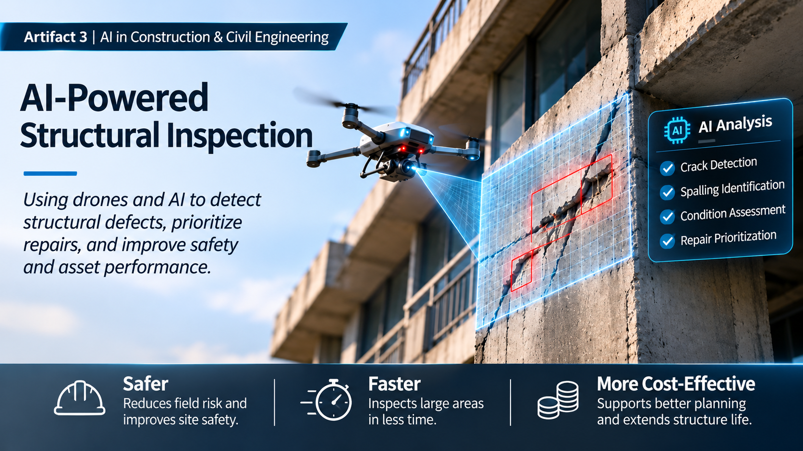

AI in Construction and Civil Engineering: The Future of Structural Inspection
Commercial AI Research | Group Newsletter | Individual Infrastructure Research Contribution
Introduction
This artifact was developed as part of a group newsletter for my Artificial Intelligence and Machine Learning course. My individual contribution focused on how AI is transforming inspection processes and supporting better maintenance decisions in civil engineering and infrastructure.
Project Description
I researched Percepto's Axion AI inspection platform, introduced in October 2026. The platform uses artificial intelligence to analyze drone images, sensor data, and previous inspection records. Its specialized AI models help identify potential problems and provide information that supports maintenance planning and decision-making.
Objective
My objective was to evaluate a recent commercial application of AI and understand how it could improve inspection efficiency, worker safety, and maintenance decisions. I also explored how similar technology could potentially benefit structural inspection and concrete restoration in the future.
Process
I researched the company's technology and examined how its inspection process works. I studied how drone images and sensor data are collected, analyzed by AI, and reviewed before maintenance teams decide what actions to take. I then presented my findings in a newsletter section designed for readers without a technical background.
Tools and Technologies
- Artificial intelligence and computer vision
- Drone-based infrastructure inspection
- Sensor data and historical inspection records
- AI-assisted anomaly detection
- Technical research and professional communication
Value Proposition
This project demonstrates my ability to research emerging AI technologies, evaluate their commercial applications, and communicate technical concepts clearly. It also allowed me to connect my professional civil engineering experience with my growing knowledge of AI and machine learning.
Original Project
This work was part of the November 2026 Fieldnotes group newsletter. My individual contribution appears on page 5 under "AI Takes Infrastructure Inspection to New Heights." The full newsletter is a collaborative work, and credit belongs to all group members.
View Original Newsletter (PDF)References
Percepto. (2026, October 27). Axion platform launch announcement and inspection product documentation. See references 21–22 in the original newsletter.